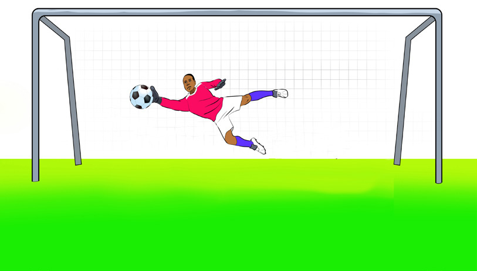
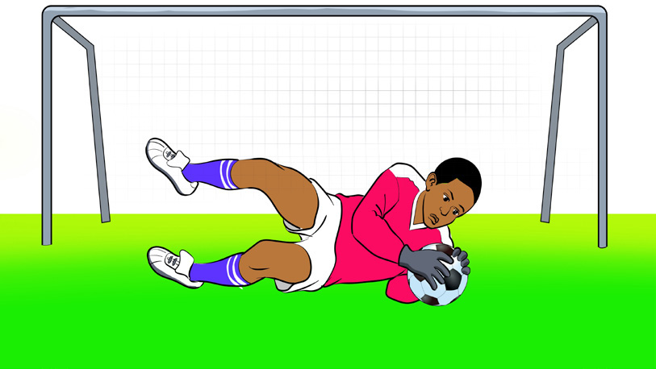

(a) Saving (b) Ball handling
Figure 4.13: Goalkeeping skills
Rules of football
One of the characteristics of sports is the presence of a global governing body of the particular sport. The Federation of International Football Association (FIFA) is the world football governing body. To ensure that the game is played safely and fairly, FIFA enacted 17 laws which are briefly explained in this section:
Law no.1: The field of play
The game must be played in a marked rectangular field of between 90-120 m in length and 45-90 m width.
Law no.2: The ball
The ball must be made of approved materials with a diameter of 68.5 – 71 cm, a weight between 410 – 450 g and pressure of between 0.6 – 1.1 atmospheres at sea level.
Law no.3: Number of players
A football match consists of two teams and each team has a maximum of 11 players including a goalkeeper. During a break in play, an outfield player may switch places with the goalkeeper. A football match cannot start or continue without at least seven players on each team. Since 2021, it has become mandatory that each team may substitute a maximum of 5 players instead of 3 players during an official competition.